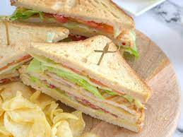

Sandwich
Receta de Sandwich

Ingredientes
- 2 rebanadas de pan de molde
- 4 lonchas de pavo
- 1 loncha de queso
- 2 pepinillos
- Cebolla caramelizda (al gusto)
- Salsa (al gusto)
Utensilios necesarios
- Cuchillo de cocina
- Sandwichera
- Cuchara
Elaboración
- Echar la salsa escogida en ambas rebandas de pan
- Poner la loncha de queso sobre una rebanada
- Colocar las lonchas de pavo encima del queso
- Cortar los pepinillos por la mitad con el cuchillo de cocina y colocarlos
- Echar la cebolla caramelizada con la cuchara
- Se pone la otra rebanada sobre el resto de ingredientes y se cierra con algo de fuerza
- Se introduce el sandwich dentro de la sandwichera
- Calentar durante aproximadamente 5 minutos